Lab 13 — Create a Short Video with AI
IA342 · Week 13 · November 16–20, 2026
Monday: Gemini + Google Flow · Wednesday: Google Vids
Due: Friday, November 20, 2026, 11:59 PM EST.
Start with a finished example
Before we begin, watch the instructor's AI-generated MongoDB lecture short. Notice the slides, visual storytelling, presenter, and narration. You will build a much shorter version on a topic you choose.
Watch: AI-Generated Lecture — NotebookLM → Gemini Canvas → Google Vids
Your assignment
Create a short video of up to two minutes using about five simple slides. Introduce a topic that interests you—such as a hobby, your hometown, a sport, or an idea you want others to understand. You may use “Latest Trends in Generative AI” (our instructor example), but AI is not a required topic. Choose one clear message and an intended audience.
Your final video must include at least one Gemini-generated image, at least one short Google Flow video clip you generated, at least one speaking AI avatar, and clear voiceover narration for the other explanatory scenes. Music and additional AI features are optional. Slides are working material, not a submission item.
Monday is preparation and exploration; there is nothing to submit. Wednesday is for assembling the video. You can continue creating or improving media on Tuesday, when daily Flow credits may be available again. The only final submission is your MP4 video plus a short reflection in Canvas.
Monday — Prepare slides and explore AI media
The instructor will demonstrate the workflow first. You then have about 30 minutes to experiment, find your own topic, and start preparing slides and media. Practice outputs need not be kept or submitted. Save only the results you decide to use later.
1. Try two kinds of Gemini images
Open Gemini. First, make an imaginative image to explore scene, style, and mood. Then make a labeled diagram or poster. For the second image, carefully check the wording and arrow order: visual polish does not guarantee accuracy. Write and modify your own prompts; the following are only examples.
Create a realistic photo of a golden retriever chewing a book in a cozy
home library, with natural daylight and a playful mood. Wide 16:9 view.
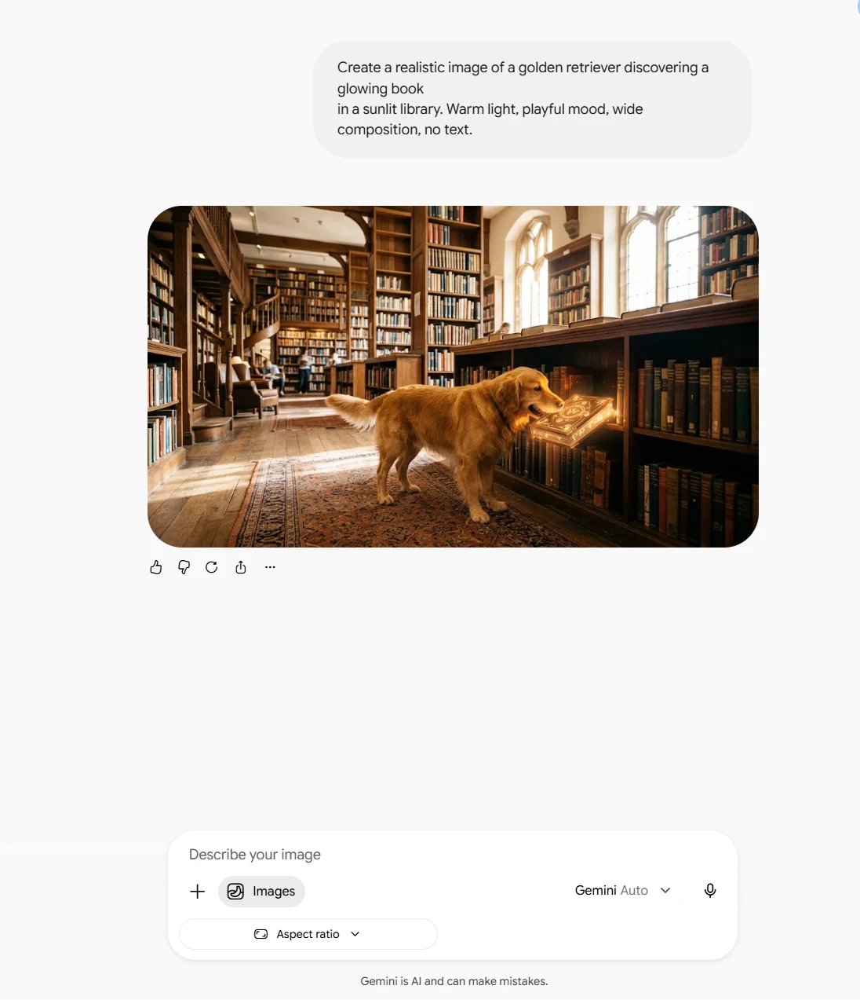
Create a clear educational flowchart, "FROM DATA TO INSIGHT", with four
steps in this order: COLLECT → STORE → ANALYZE → VISUALIZE.
Use exact labels, large readable text, and clear connecting arrows.
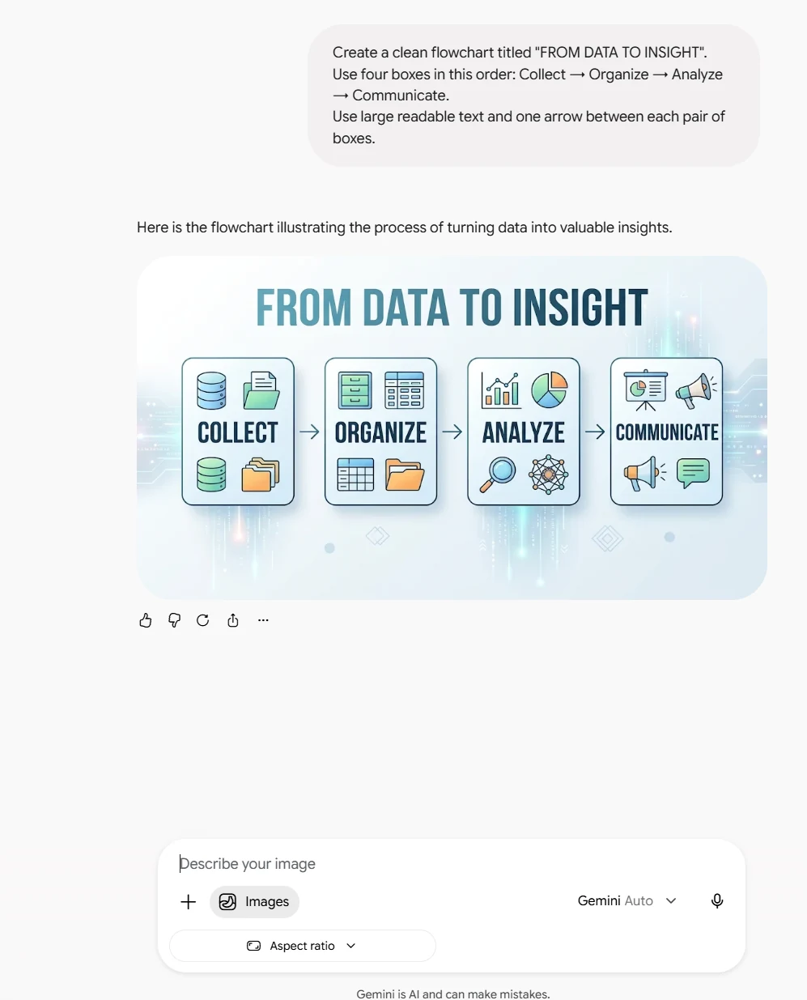
For your final video, one relevant Gemini image is enough. You are not required to use both practice images.
2. Explore background music (optional)
Try Create Music in Gemini if available. Start with a short instrumental track, not a song that competes with speech. Listen to the instructor's example: A New Blueprint — shared Gemini-generated music. The link was provided by the instructor; access can depend on Google's sharing or sign-in behavior.
Create light, upbeat instrumental music for a short introduction to
Generative AI. Gentle rhythm, no vocals, and room for clear narration.
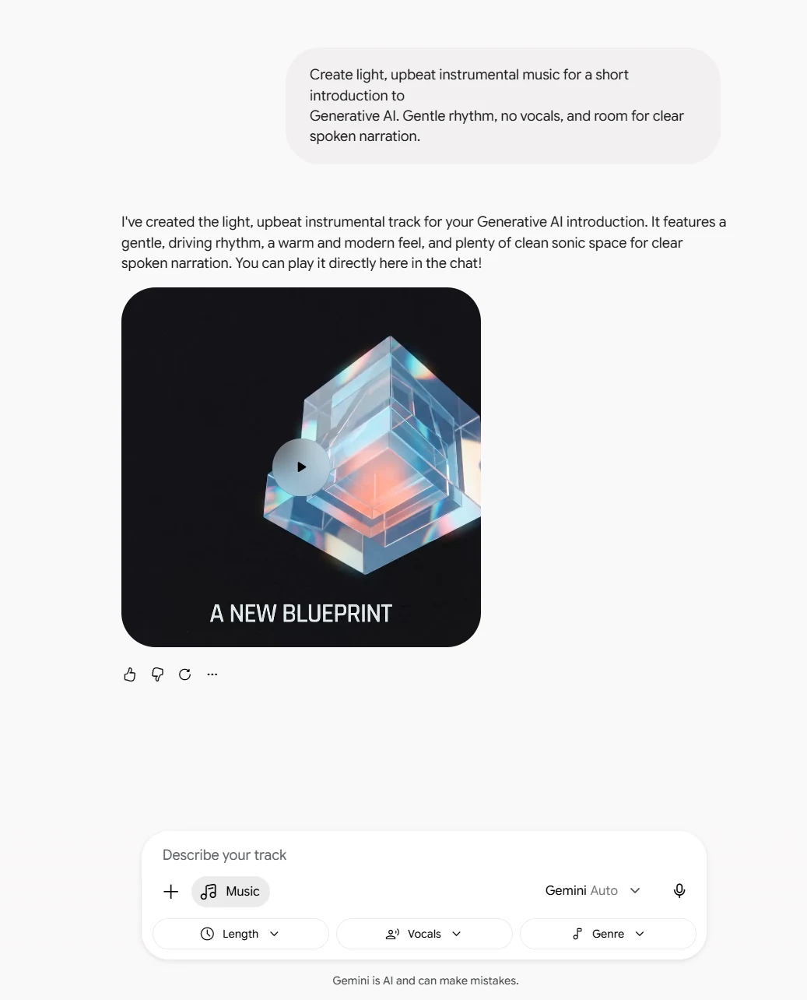
Generating music is optional, and the final video can use music from an eligible Vids library or no music. Spoken narration must remain clear.
3. Search online with Gemini, then create five Slides
Begin with research, not a generic slide request. In Gemini, ask it to search the web for recent information, identify reputable sources and dates, verify the claims you plan to use, and then build a five-slide presentation in Canvas. You may choose your own topic; here is a concrete example for the instructor's GenAI briefing.
Search the web for the latest trends in Generative AI as of today.
Select three meaningful recent developments, using credible sources.
For each, give its date, source title, URL, and one fact supported by it.
Distinguish confirmed developments from opinions or predictions.
Then create an approximately five-slide presentation in Gemini Canvas
for an undergraduate audience: title and hook; one slide for each
of the three trends; and a concise takeaway on the final slide.
Use clear, readable visuals, very little on-slide text, and provide
speaker notes for a narrated video lasting no more than two minutes.
Do not invent statistics or citations. Let me review the outline first.
Open the sources yourself before using their claims; refine the prompt or correct errors. Then use Share & export → Export to Slides, open the editable Google Slides file, and fix layout or wording as needed. You may insert your own generated image or Flow footage while preparing the deck, but Flow video is still inserted directly in Vids later because embedded video does not necessarily transfer during slide conversion.
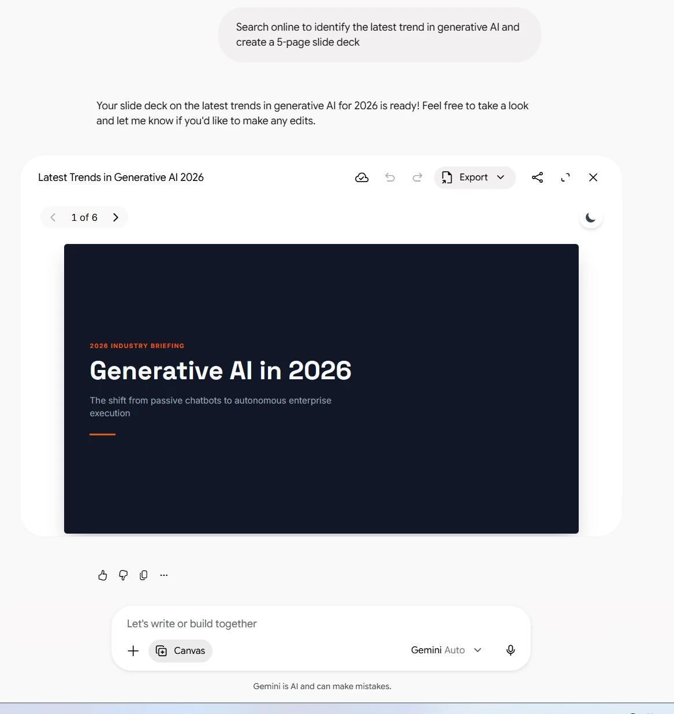
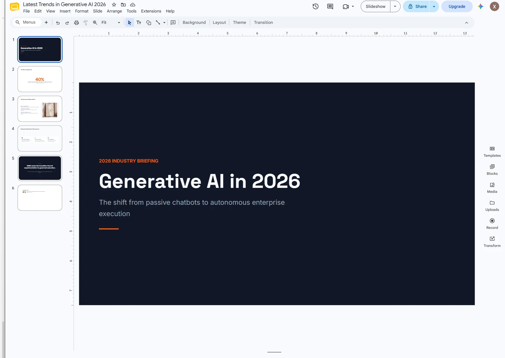
Speaker notes: Ask Gemini to draft a brief script for each slide, or write your own. Check the script yourself, and keep it short enough for the final video. Notes should contain what will be spoken, not research prompts or full source URLs.
Optional for eligible Google AI Pro / Workspace accounts: Ask Gemini in Google Slides may help generate images, improve layouts, revise text, or add slides. Some plans also offer higher research or generation limits. These are not required, and the basic Gemini Chat → Canvas → Google Slides workflow is sufficient. Feature names and entitlements may differ by account.
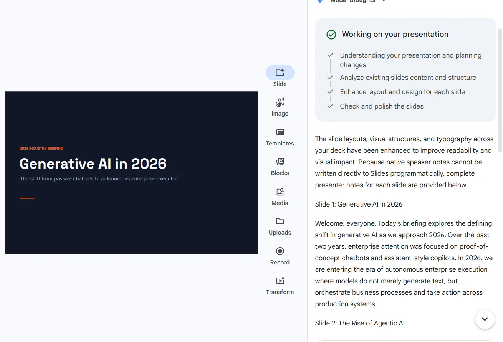
4. Explore Google Flow — make a short video
Go to Google Flow. Use the standard prompt with Agent Mode off. Check the current video model, available credits, aspect ratio, resolution, duration, and number of outputs before generating. For a low-cost starting point, try a short 360p Omni Flash draft with one output, if available. Veo Lite is another basic video model; options and prices change.
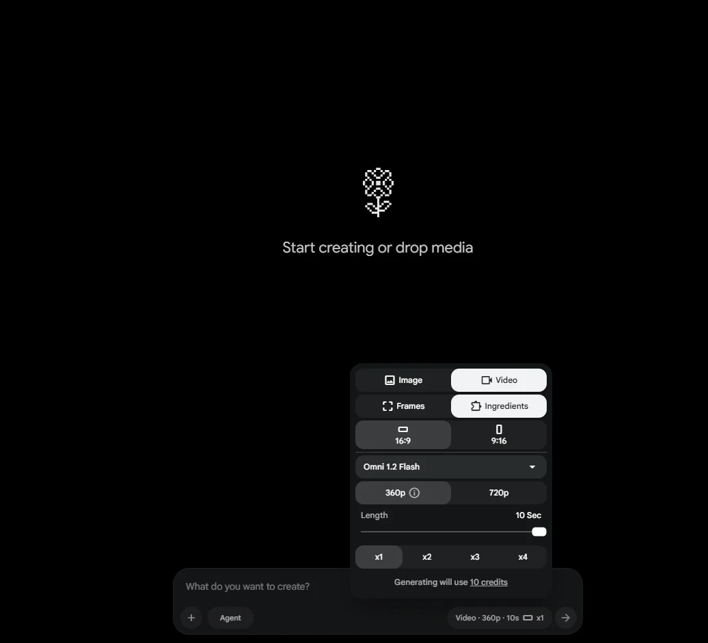
In the Text to Video mode, write a prompt that specifies who or what appears, what happens, where, and how the camera moves. Generate just one short draft first; inspect the result before spending more credits.
Text to Video — try this one. Describe the subject, action, location, and camera movement in your own words. Example:
An animated photographer sees a beautiful sunrise on a mountain trail,
raises a camera and takes a picture. Warm light, gentle camera motion,
professional animated style, 16:9. No dialogue or tiny screen text.
Check the result in Flow. The next image is a screenshot of the generated clip inside the Flow editor, including its editing timeline. It is not a second video. Confirm that the action and framing match the prompt; trim or regenerate only if needed.
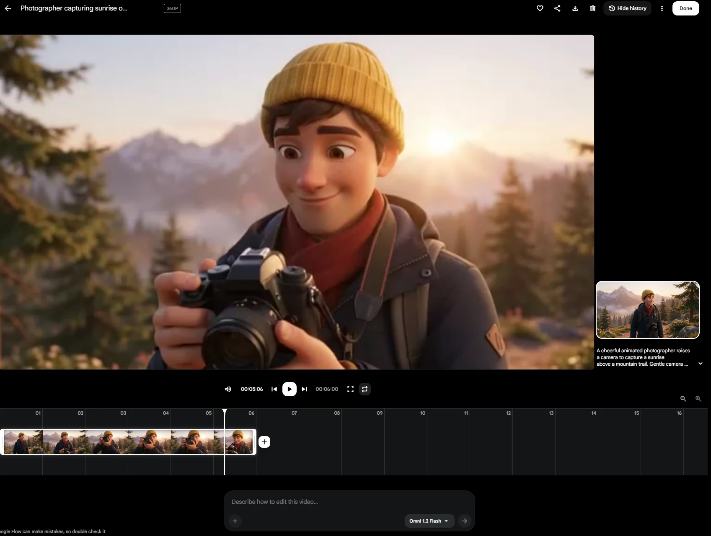
Now play the actual video below. Compare the moving result with the editor screenshot above. The clip is an instructor example; you must generate your own clip for your final submission.
Character / Ingredients — try creating one character. Generate or select a character, save its reference, and use the same reference in a video prompt (for example, @character when that control is offered). If you generate a second clip, the character can perform a different action while keeping a recognizable appearance. This does not automatically make the two clips one continuous scene.
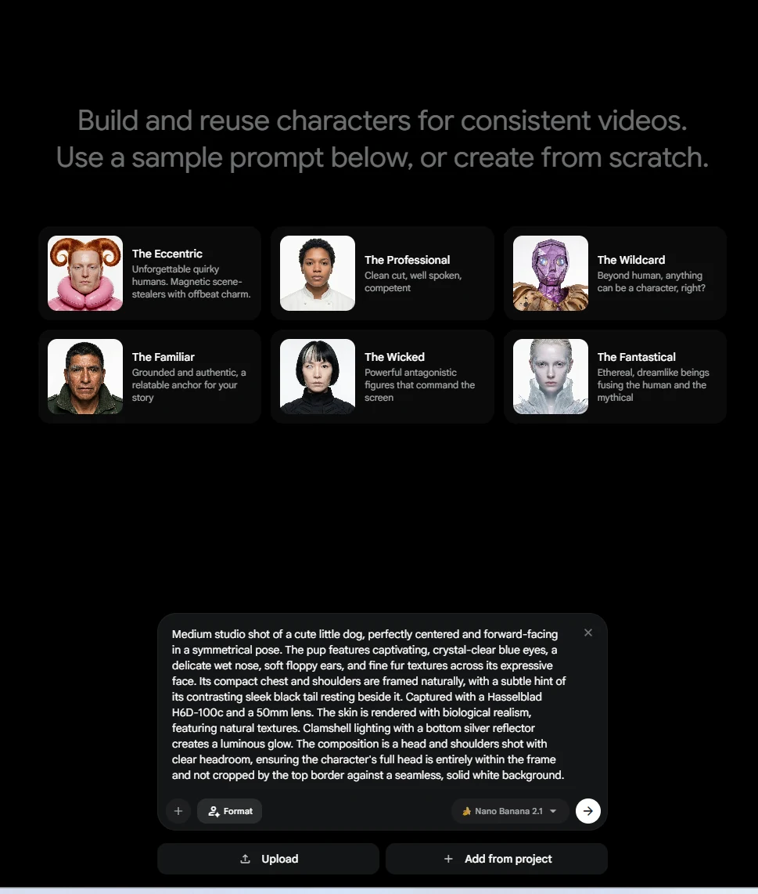
After creating the character, save its reference and look for it in your reusable character or ingredient list. Use that reference in a new prompt to encourage a consistent appearance across shots; the model may still change small details.
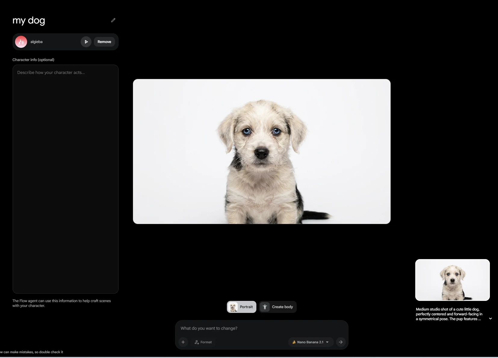
The next image shows the puppy result and clip timeline in Flow. Examine the character and the two shots. This screenshot is the editing view, not the playable file.
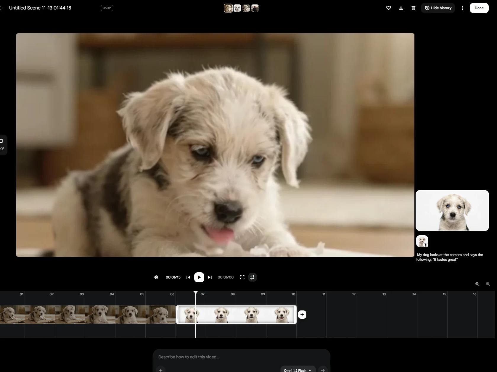
Play the video to compare the puppy's appearance across the shots. You do not need to generate a second character-based video for this lab; one original Flow clip is enough.
Watch a separate instructor example: a character-led technical explanation
Frames to Video — know it, but do not generate another clip for this lab. You can supply a starting and an ending image and ask Flow to animate between them. In this instructor's example, two screenshots guide the transition. The AI-created middle is an illustration, not a recording of actual computer operations.
Extend and Upscale: Extend is not available on the free Flow plan; current video Extend is a paid Omni feature, and the older Veo Extend retired. You may try video Upscale only if your existing plan offers it. Free image upscaling is a separate feature. No paid plan, Extend, Agent Mode, or higher resolution is required.
When you are satisfied with a clip, use its download menu to save the MP4. This is the file you will later import into Google Vids; downloading the editing screenshot is not enough.
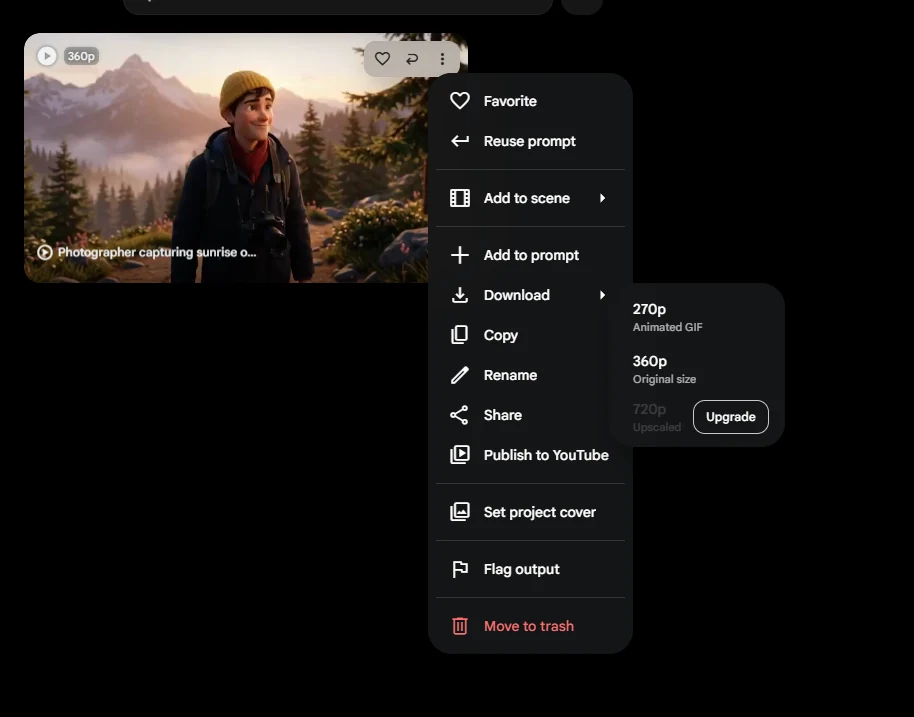
Time for exploration: Use the rest of Monday to test prompts, prepare your Slides, or decide which image/video to use. Nothing is due Monday. You may return on Tuesday or Wednesday if your daily Flow allowance refreshes. Download useful MP4s only when you are ready to include them in your final video.
Wednesday — Assemble everything in Google Vids
Watch the instructor's demonstration, then use your own Slides and saved media. Each slide becomes a scene, and the duration can be adjusted on the timeline as you add narration or video.
1. Convert Slides, without automatic narration at first
Open Google Vids and choose Convert Slides (or Google Slides → File → Convert to Video if offered). Select the presentation you exported Monday and the slides you want.
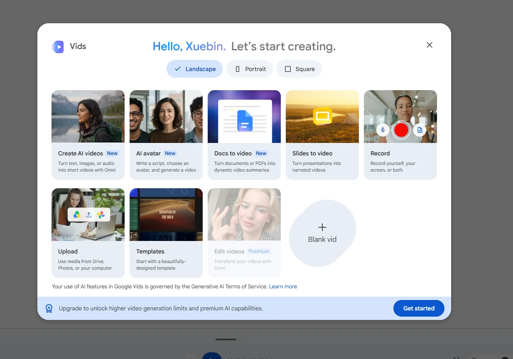
Choose your existing presentation. In the Drive picker, select the Google Slides deck you exported from Gemini Canvas. Make sure it is the editable deck you reviewed, not a screenshot of a slide.
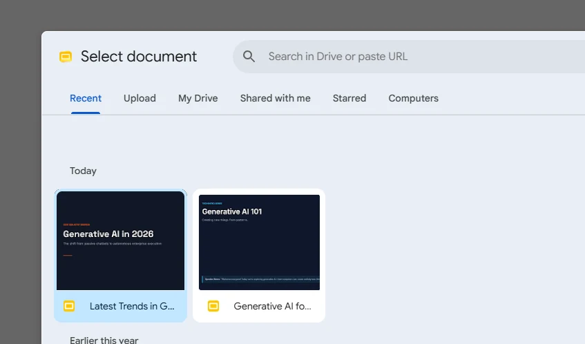
Choose about five slides. At this stage, turn off automatic AI voiceover, script, music, or animation if your conversion dialog offers these options. You will add an avatar and voiceovers deliberately later; this avoids creating overlapping audio tracks.
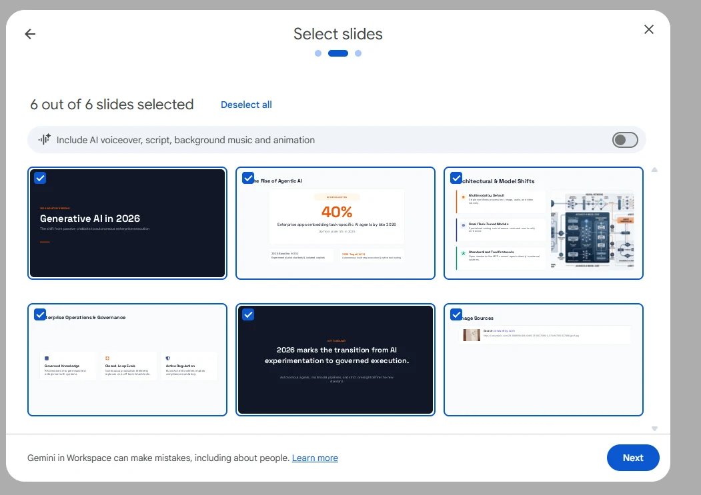
Check the imported scenes. Confirm each intended slide appears as a separate scene in the timeline and the text remains readable. The slide order is your initial story sequence; you can adjust scene duration once narration and video are added.
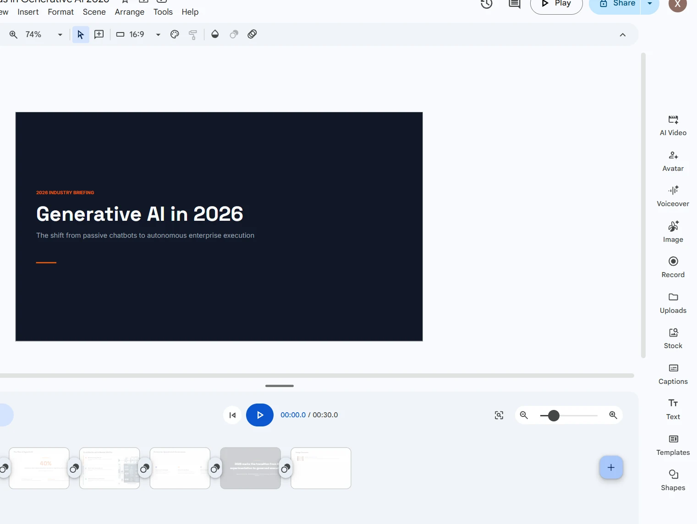
2. Add at least one speaking AI avatar
Select the scene where you want a presenter, such as the introduction. Open AI avatar, browse preset avatars, listen to their voices, choose a suitable one, enter a brief script, and Insert. Do not add a second voiceover with the same words on that scene.
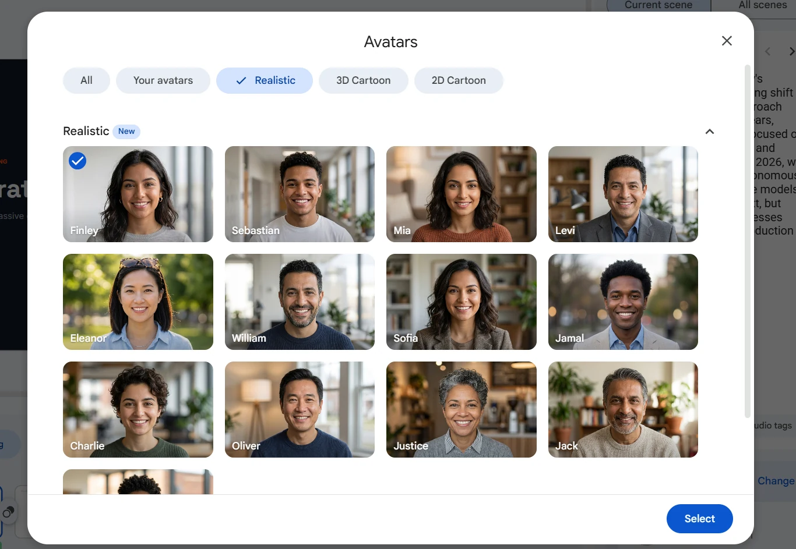
Write the avatar's script for this scene only. Use the short speaker note you prepared for the introduction, choose a voice, preview the speech, and insert the avatar. The next image shows the avatar script editor alongside the current scene and timeline, after choosing an avatar; it is not the separate Voiceover tool.
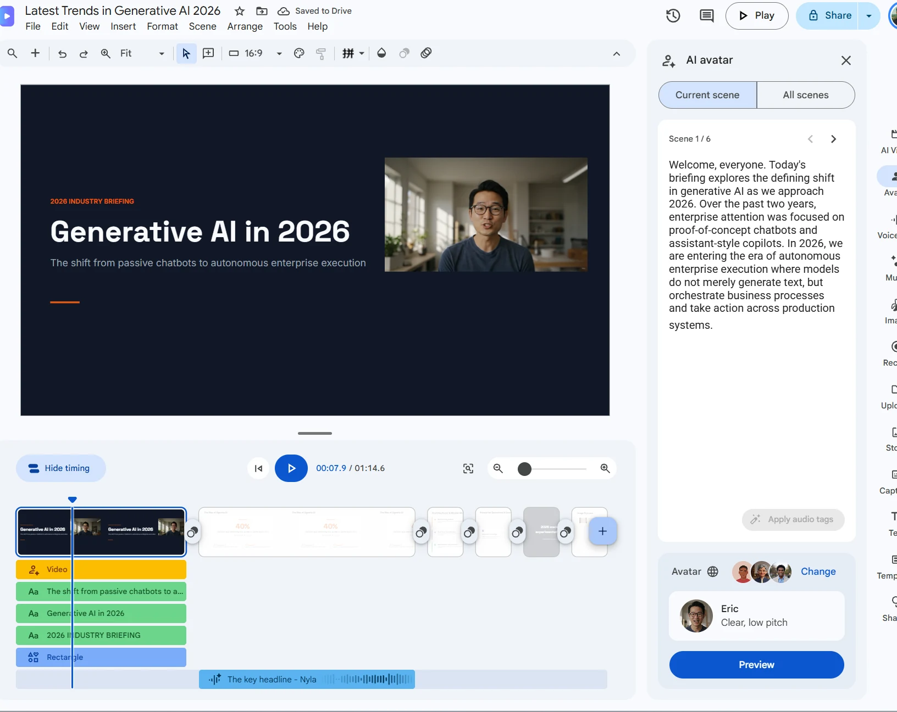
Play the avatar scene once. If the speech is too long, shorten the script or adjust the scene length. Do not place an additional voiceover over the same words.
Free-account limitation: An avatar or video generation can be temporarily blocked by rate or usage limits. The instructor saw a character-limit message in the example below. This is why the assignment gives you time across multiple days. Try again when your allowance permits, or contact Dr. Wei early if the required feature remains unavailable; do not buy a plan.
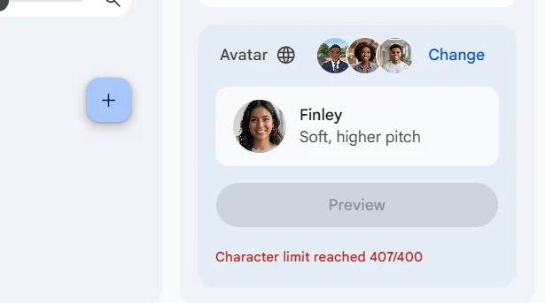
3. Add voiceover to the other explanatory scenes
Select a scene that does not use the speaking avatar. Open Voiceover → Current scene, paste or adapt that slide's speaker-note script, choose a narration voice, and listen to the preview before inserting it. Repeat for your other explanatory scenes; use All scenes only if you really want narration across every eligible scene.
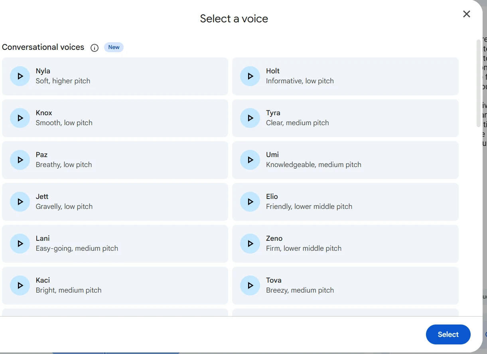
Check the result on the timeline. Each explanatory scene should have either avatar speech or voiceover narration, not two voices reading the same script. Keep the voiceover short enough to fit the scene; adjust scene duration if needed. The media tracks will be reviewed during the final preview.
4. Insert your image, Flow video and optional music
Choose a scene and use Uploads or Insert → Uploads to bring in your image or video. You may select a file from Google Drive or directly from your computer; placing it in Drive first is convenient, but not mandatory. Insert your Gemini-created image and at least one of your own Flow videos where they support your story. Additional scenes or clips are up to you.
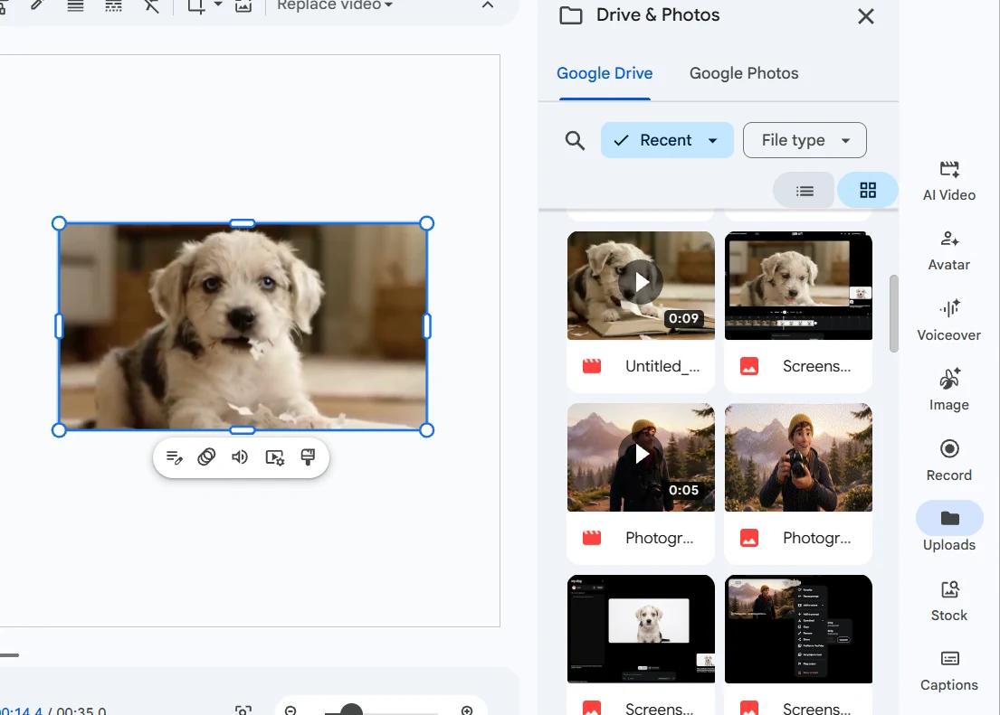
Place each asset in a scene. First add the Gemini image to a scene where it supports your message. Then upload and insert the MP4 clip downloaded from Flow into a suitable scene; resize or crop if necessary and check its framing. The next image is a Vids editing screenshot showing imported scene content and timeline tracks after media has been added.
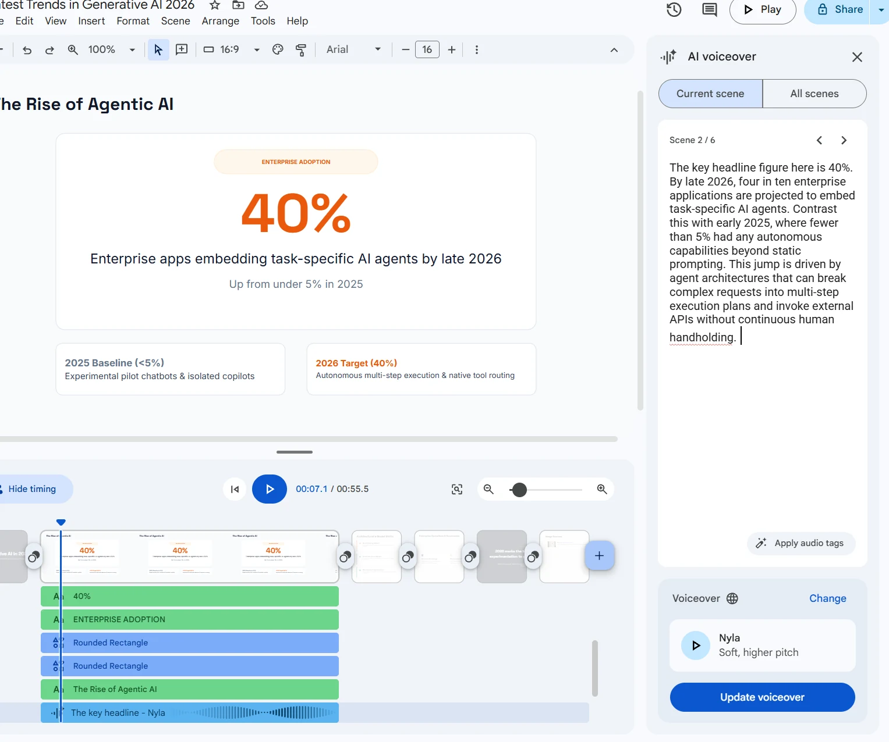
Important: control the timeline and sound. Videos, avatar clips, and voiceovers can lengthen scenes or introduce extra audio tracks. If your Flow video or dog clip includes its own sound, play it first: you may choose to show the video with its sound and no narration, or mute/lower the video sound while a voiceover explains it. Avoid simultaneous competing speech. Background music may continue underneath narration at a lower volume.
Listen to the scene after every change. Decide whether the Flow clip's own sound should play, or whether to lower/mute it while the voiceover explains the visual. Keep optional background music quieter than spoken narration.
Optional: add your own Gemini-generated music or a permitted Vids library track, trim it, and adjust its volume/fades. If your plan offers Generate video inside Vids, you may explore it too; this does not replace the required Flow-generated clip. Available features and limits vary by account.
5. Preview and export
Play the whole video with sound. Check readability, voiceover and avatar timing, that your image and own video clip are visible, and that it is no longer than two minutes. You may shorten or extend individual scenes so narration and visuals finish naturally. Credit AI-generated media appropriately, and do not present synthetic footage as actual evidence.
Read the final timeline as a quality check. Verify scene order, that the avatar and voiceover finish before the next cut, and that background sound never competes with speech. The image below is one final timeline screenshot (not an additional video).
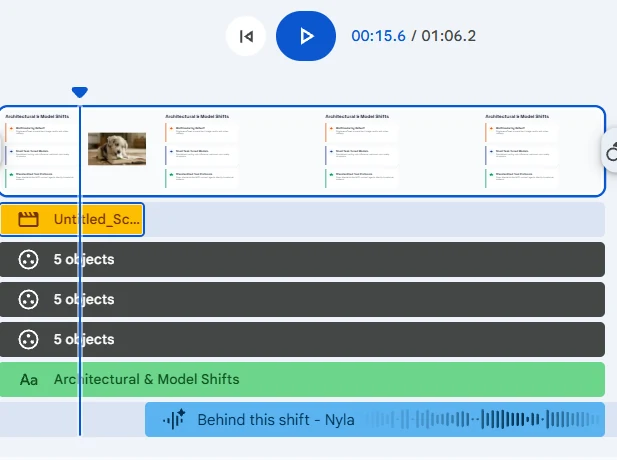
Use File → Download as MP4 (or the export/download option visible in your Vids version). Open the saved MP4 and check the beginning, middle and end before submitting it.
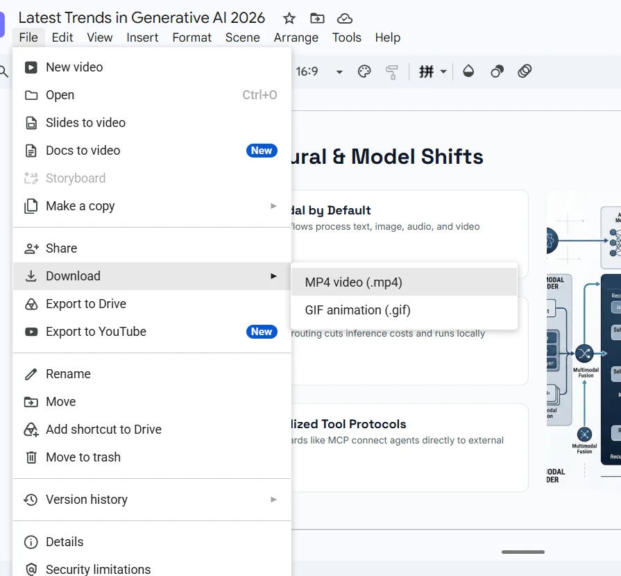
Open the exported MP4 and play its beginning, middle, and end before uploading it to Canvas. The submitted file must be the MP4 itself, not a share link or a screenshot.
Submit in Canvas
By the deadline shown in Canvas, upload one final MP4 video (up to two minutes). Do not submit a Google Slides, Google Drive, Gemini, YouTube, or Vids URL. No Monday files or screenshot collection is required.
In the submission comment, write a short reflection (3–5 sentences): How could AI-created images, video, avatars, and narration help communicate findings or explain a process in intelligence analysis? What is one limitation or risk you noticed (for example, a misleading visual, unverified claim, or audio that changes the meaning)? Your final video may be on any approved topic; the reflection connects the technique to analytical communication.
Rubric — 100 points
| Criterion | Points | Full-credit expectations |
|---|---|---|
| AI-generated visual media | 40 | At least one original Gemini image and one original Flow video clip are clearly used in the submitted MP4 and support the topic. |
| Final video & audio storytelling | 45 | Coherent, readable slides; at least one speaking AI avatar and voiceover on the other explanatory scenes; controlled audio/timing; video no longer than two minutes. |
| Reflection | 15 | 3–5 sentences connect the tools to an intelligence-analysis use and identify one meaningful limitation or risk. |
| Total | 100 |
Each criterion uses PASS (full points) and MISSING (zero) as the default rubric ratings; the instructor may enter intermediate scores. Music, paid features, and multiple clips do not earn extra points by themselves.
Help: Google Flow video creation · Google Flow credits · Gemini in Slides · Google Vids slide conversion · Google Vids avatar help. Features and allowance may change; follow what your account actually offers.